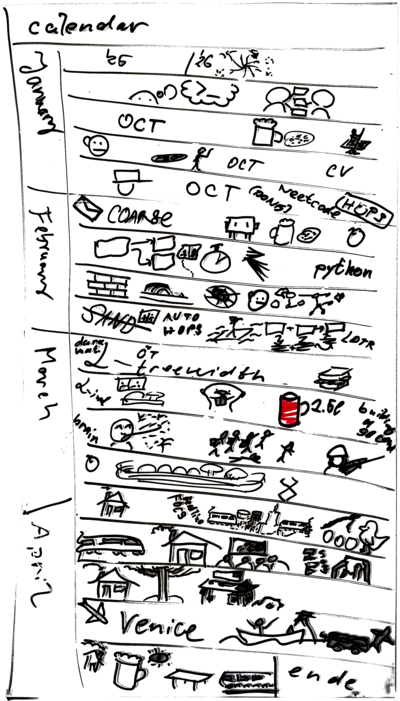

| tags:[ reflections ]
2026 1/3 – deciding to change a job
The first third of 2026 was quite eventful. Every year may seem so if I’d keep some track of it. Better late than never, so let this be the start of my reflections over the past months. I have an accompanying drawing that I made throughout that time period.

Job Change
The year started, as it always does, with celebrations of the new-year’s eve. A few days afterwards, I returned from home to Warsaw. This return trip holds major significance to me. Just before taking the train, while being transported to Szklarska Poręba, I talked with my family about the future. This snowballed into a 7 hour pondering which ultimately resulted in an idea of leaving academia. It was a sad realization that the academic track no-longer fits what I want to do – I always admired scientists and wished to be one, but now I see how the academic system works and I do not see to stay in it while being satisfied. This I believe to be true for the main academic track (assistant, associate, full professors); there are alternative ways to be employed in academia (e.g. as a programmer) which I still find reasonable. Short version of my thinking: Assistant professor’s job consists of publishing scientific papers (find a good problem, solve it, write the paper, publish), teaching (prepare courses, have lectures, mark tests, oral examinations, lead students), get grants (have a topic, write a grant proposal, pray), admin (evaluation groups, reviews), and optionally take part in university’s political scene. Stronger researcher you are, more lenient the system typically is towards your other duties. Super strong people can get purely scientific positions. Now, for a while I’m struggling to have a research topic of my own, making it very hard to get a grant or a purely research position; and at the same time I do not find satisfaction in the vast majority of the other duties of assistant professor’s position. Compared to a software engineering job for me is a difference between night and day. I enjoyed the postdocs as they are mainly about the for-me enjoyable parts of research (I think many academics would agree), but to continue this the other parts of the job become a necessary, and this trade-off does not make sense for me.
The first two weeks of January I got in touch with many of my friends, former colleagues, and current colleagues, to talk about sensibility of leaving. I may have hoped anyone to talk me out of it, but no one tried, everyone was understanding, which made me more sure that trying something else is not just a temporary madness. The decision was quite freeing – there was little duty except for what I want to finish; little pressure to start new exciting research as it would be impossible to finish within the time-frame. I focused on papers that were work-in-progress and try to get them submitted. Out of the 9 we submitted two, one is super-close to be submitted but got stuck, few others progress slowly, but majority lay dormant.
For the next two months I was searching for a job – I tried several positions, many of which eliminated me soon. One where I got to technical rounds, and was eventually accepted to, is second-foundation. A friend recommended me to try this company and I’m very glad he did, they seem to consist of nice people, hopefully I’ll still have this impression throughout the next year.
HOPS
Hierarchy of Parameters project is still progressing. I’m working on is to incorporate graph class properties and higher-order parameters. During the workshop in Venice I met with Manuel Sorge ↗ and he showed me his new visualization ↗. We talked about the projects in length and agreed to make a join effort to provide the community with a good hierarchy. This effort will be organized through HOPS organization on Github ↗ and the main takeaway is that we will create a repository that will host free data (CC0 license) in JSON format about parameters, their relations, and relevant references. We also agreed on how to keep the data about the related structures that I want to add on top of the parameters. This initiative is open, so let us know if you want to help.
AI and Coding
Hearing about Claude Code from a colleague prompted me to try it as well. I do still find it useful, and can recommend it for the following use cases.
System configuration – for about half a year I use Omarchy ↗, and I found using the llm very good at finding a way to change the configuration files to do exactly what I want. I used it to set up a script which can set up my configuration from scratch. I already had a way to synch my setup among several computers with Dropbox, but the llm helped polish this approach. Moreover, it help me fix the issues I had when some games would not start – unfortunately, being in arch means you sometimes have packages that are “too new”.
Comprehension and in-detail explanation – I think it is useful for explaining hard concepts. One must be careful to not get dunked on by hallucinations but when you supply a text that you quite don’t understand, you may ask llm to explain it in steps. Even more focused, you should tell it what parts of the thing you do understand and what you don’t understand. It is good tailoring the explanation exactly to your case. Though, I once failed awesomely; perhaps I was missing too many prerequisites.
Coding – writing code or helping you write code. Note that I don’t say software engineering. I didn’t find much success with letting llm design a solution. It is good at writing complex code changes that I specifically requested. Still, beware of the cognitive debt that you may attain by not writing everything by hand. It is often quite good at explaining compilation issues and possible remedies – many you can find on stack overflow, but again, you can ask it to explain the issue into arbitrary depth, and tailored to your understanding.
Prototyping – making a quick proof of concept project. To make a prototype you shouldn’t care about the code-quality. Using an llm heavily to make a one-shot quick mock of a thing seems like a very good use of it. I saw some people use it to make parts of an actual project, but for this you need to specify all the technical details – more you leave ambiguous, more the llm will decide on its own, and quite possibly in a way that you don’t like.
Aside from llms, I recalled Python (for the interviews), continued coding HOPS, and made a few small toy applications. I wanted to try making a game again and found Bevy ↗ quite charming for which I learned ECS – this design approach of is quite different from what I expected and I believe it is worth understanding.
Notetaking
With notetaking I had a problem that my notes don’t really add much value to me. I usually don’t read books, but I read Building a Second Brain ↗ – it answered a few issues that I had with notes. It did not mention anything about tools (which is correct, as those change with time) but after some research and reflection I switched from Obsidian to Joplin ↗. I adopted the PARA and realized much information I have can just be put into archive without any issues – this I did to my notes but also I synchronize their structure now with my local files. I think there are many things that these apps could do better. A big feature that Joplin provides is that it can sync with your other devices (and mainly phone) through Dropbox; this makes it very easy to take a quick note at any time.
Games
Throughout the months I played a few games, namely
- Raft ↗ – fine story-light co-op,
- Tinderborn ↗ – chill sim-city,
- Far Cry 5 ↗ – shooter with story but without a real progression,
- Opus Magnum ↗ – okay puzzle/automation game,
- Hades 2 ↗ – rogue-lite with long-term story,
- Mechabellum ↗ – cool mech auto-battler,
- Helldivers 2 ↗ – so-far the best co-op game, and
- Slay the Spire 2 ↗ – I don’t buy early access, but this one is already good.